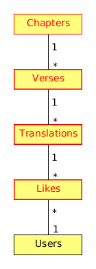

DB Schema
1 DB Schema
Each verse can have several translations in each language. Each translation can have many likes. Each like is given by a certain user.
The DB tables and their fields:
- Chapters
- The chapters of the Quran.
- cid : tinyint
- Number of chapter (from 1 to 114).
- verses : smallint
- Number of verses.
- start : smallint
- Index in the table of verses.
- name : varchar(20)
- Arabic name of chapter.
- tname : varchar(20)
- Transliterated name of chapter.
- Verses
- The verses of the Quran.
- vid : serial
- Verse id.
- cid : tinyint
- Number of chapter.
- nr : smallint
- Number of the verse.
- verse : varchar(2500)
- The text of the verse.
- Translations
- Translations of the verses.
For each verse there can be translations for different
languages, and more than one translation for each language.
- tguid : char(40)
- Globally Unique ID of the translation, defined as the hash: SHA1(CONCAT(translation,lng,vid))
- vid : smallint
- Reference to the id of the l10n string that is translated.
- lng : varchar(5)
- Language code (en, fr, sq_AL, etc.)
- translation : varchar(2500)
- Translation of the verse.
- count : tinyint
- Count of likes received so far. This can be counted on the table Likes, but for convenience is stored here as well.
- umail : varchar(250)
- The email of the user that submitted this translation.
- ulng : varchar(5)
- The translation language of the user that submitted this translation.
- time : datetime
- Time that the translation was entered into the database.
- active : boolean
- The active or deleted status of the record.
- Likes
- Likes for each translation.
- vid : serial
- Internal numeric identifier for a like.
- tguid : char(40)
- Reference to the id of the translation which is liked.
- umail : varchar(250)
- The email of the user that submitted this translation.
- ulng : varchar(5)
- The translation language of the user that submitted this translation.
- time : datetime
- Timestamp of the like time.
- active : boolean
- The active or deleted status of the record.
- Users
- Users that contribute translations/likes.
- umail : varchar(250)
- The email of the user.
- ulng : varchar(5)
- The translation language of the user.
- uid : int
- The numeric identifier of the user.
- name : varchar(6)
- Username.
- status : tinyint(4)
- Disabled (0) or active (1).
- points : int
- Number of points rewarded for his activity.
- config : varchar(250)
- Serialized configuration variables.

Figure 1: Tables and their relations.
Figure 2: Structure of the DB.

Figure 3: Structure of the DB.